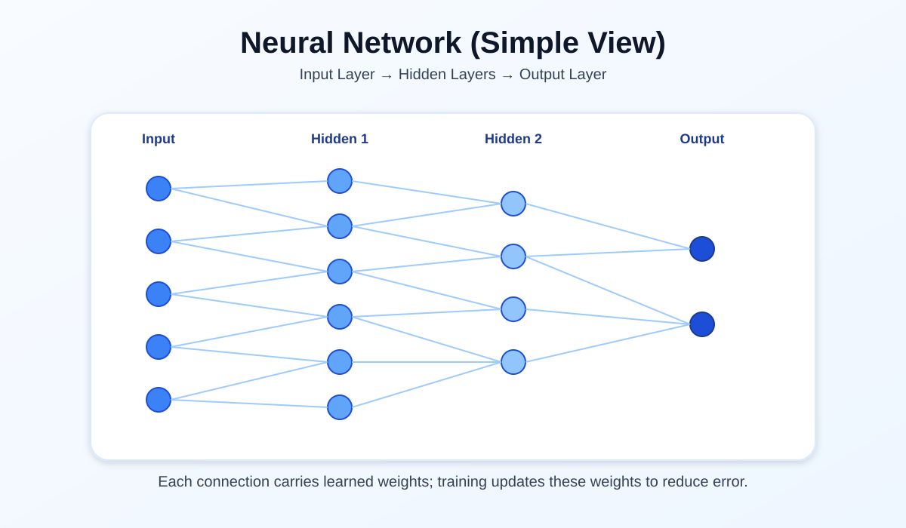
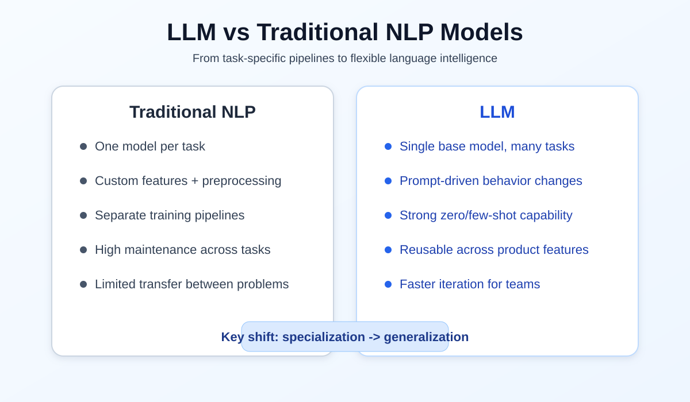
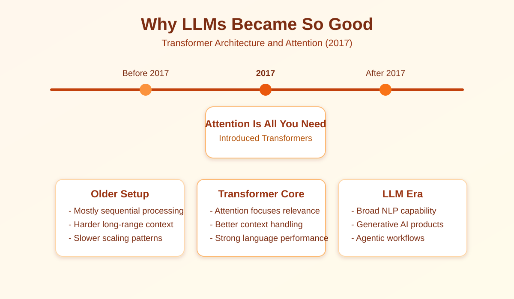
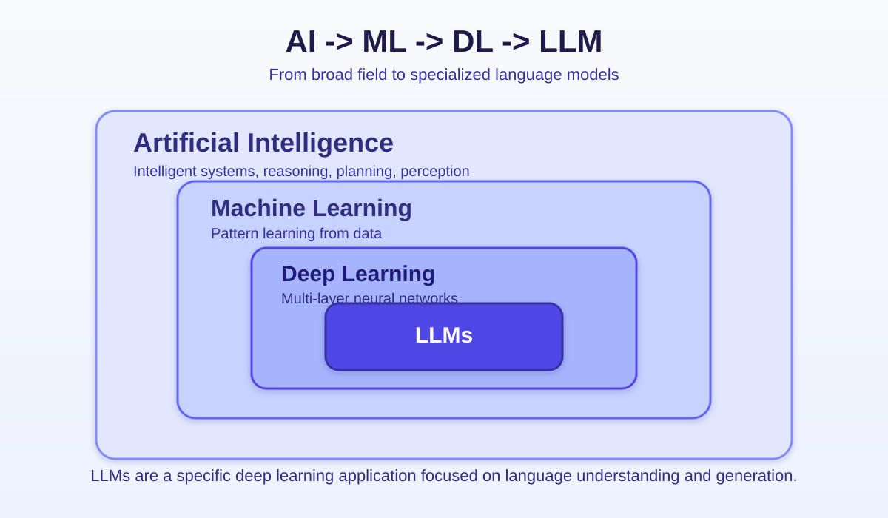

The Agentic Way: Understanding Large Language Models
If AI feels magical from the outside, Large Language Models (LLMs) are the engine under the hood. This page breaks down what an LLM actually is, why it is called "large," and what it can do in day-to-day NLP work.
What Is a Large Language Model?
A Large Language Model is a deep neural network trained to understand patterns in text and generate human-like responses.
In simple words, it learns from massive text data, then predicts what comes next in a sequence of words. That single ability powers many tasks, from answering questions to writing summaries.
Why Is It Called "Large"?
The word large usually refers to two things:
- Number of parameters: Often millions or billions.
- Training scale: Huge datasets collected from diverse text sources.
Parameters are learned values inside the model. More parameters usually mean the model can capture richer language patterns, but size alone does not guarantee better quality.
Core Building Block: Neural Networks
LLMs are based on deep neural networks. During training, the network adjusts its internal weights to reduce prediction errors.
A practical way to think about it:
- Input: A sequence of words or tokens.
- Processing: Multiple layers transform that sequence.
- Output: The most likely next token (repeated step by step).
Over time, this training helps the model respond with fluent and context-aware text.

What Can LLMs Do?
Because they model language patterns well, LLMs can handle a wide range of NLP tasks:
- Question answering
- Translation
- Summarization
- Sentiment analysis
- Text classification
- Draft generation for emails, docs, and code
LLMs vs Traditional NLP Models
This comparison usually clicks fast:
- Traditional NLP models are often designed for one specific task, like translation or sentiment classification.
- LLMs are general-purpose language models that can switch across tasks with prompt changes.
That flexibility is the biggest reason LLMs feel more capable in real products.

What Made LLMs So Effective?
The short answer is transformer architecture.
In 2017, the paper Attention Is All You Need introduced transformers and changed the direction of modern NLP. Instead of processing text strictly in order like older recurrent models, transformers use attention to weigh which words matter most for each token prediction.
That design made large-scale training more practical and performance much stronger.

The AI Stack: Where LLMs Sit
Think of this as a nested stack:
- Artificial Intelligence (AI)
- Machine Learning (ML)
- Deep Learning (DL)
- Large Language Models (LLMs)
So LLMs are a specific part of deep learning, and deep learning is one branch inside machine learning.

AI, ML, DL, and LLM in Plain Words
- AI: The broad goal of building systems that show intelligent behavior.
- ML: Systems that learn patterns from data instead of relying only on hand-written rules.
- DL: A subset of ML based mainly on neural networks with many layers.
- LLM: A deep learning model specialized for language understanding and generation.
Another practical difference: deep learning can work across text, images, audio, and video, while LLMs are primarily optimized for language tasks.
LLMs and Generative AI
Generative AI is the broader category of models that create new content. LLMs are one major engine inside it for text generation, reasoning, and conversational workflows.
If you build a writing assistant, support bot, or coding copilot, you are usually combining generative AI behavior with an LLM core.
Where Agentic Work Starts
An LLM becomes more useful in an agent setup: it can reason over a goal, choose a tool, execute a step, check results, and continue until the task is complete.
That is the shift from "generate one response" to "complete a workflow."
Key Takeaway
An LLM is not just a chatbot feature. It is a transformer-based deep learning model that can handle broad NLP work, power generative AI experiences, and support agentic systems that complete real tasks.
In the next page, we can break down how prompting changes model behavior in real-world scenarios.